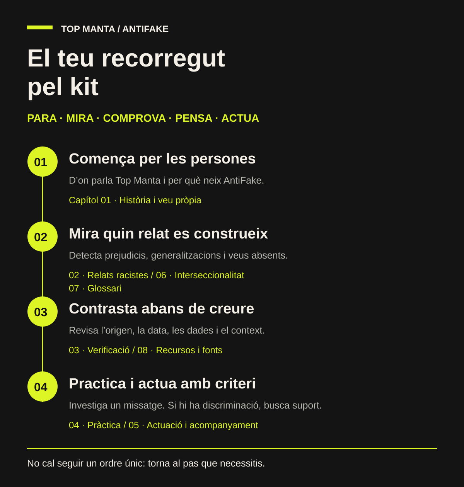

Para.
No comparteixis immediatament. Dona’t temps abans de reaccionar.
UN TOOLKIT DE TOP MANTA
No tot el que circula és cert.
No totes les històries s’expliquen senceres.
Eines per detectar la desinformació, qüestionar els relats racistes i construir una altra manera de mirar el món.
Explora el toolkit ↘Obert a tothom. Per pensar juntes.01 / EINES PER ENTENDRE I ACTUAR
Comença pel principi o ves directament
al que necessites. Tu tries el camí.
Els dos kits contenen els vuit capítols íntegres i un índex de navegació. També pots descarregar cada capítol per separat.
Vuit capítols complets, amb la numeració original de l’01 al 08. Disponibles en català i anglès.
EL MAPA PER ORIENTAR-TE
Comença per on et sigui més útil.
Els capítols es complementen.

02 / CINC ACCIONS. UNA MIRADA NOVA.
Un camí per investigar allò que reps,
llegeixes i comparteixes.
No comparteixis immediatament. Dona’t temps abans de reaccionar.
Qui parla? De qui parla? Quines emocions intenta provocar?
Busca la font original, la data, el context i altres fonts independents.
Què falta? Un cas individual s’està convertint en una generalització?
Comparteix evidències, afegeix context i dona espai a les veus afectades.
PER TENIR-LO A MÀ
Desa el kit breu per tornar a les preguntes essencials abans de reenviar una informació.
Descarrega el kit dels cinc passos · PDF ↓03 / ARA ET TOCA A TU
Tria una notícia, un vídeo o un missatge i investiga’l amb aquesta llista de comprovació. L’objectiu és arribar fins on permetin les evidències.
Descarrega la llista de comprovació completa ↓Si no hi ha prou evidències, dir «no ho sabem» també és una resposta.
EXEMPLES PER POSAR A PROVA LA MIRADA
Primer investiga.
Després valora què pots afirmar.
Aquests tres exemples són ficticis i serveixen per practicar. No són notícies verificades ni acusacions contra persones o col·lectius. Els casos reals que incorporem s’identificaran amb les fonts, la data de revisió i els límits de la comprovació.
Situació fictícia. Reps una fotografia amb un text que assegura que s’ha fet avui a la teva ciutat. No hi ha autoria ni enllaç a l’original.
Què comprovaries? Busca la primera publicació que puguis localitzar, la data, el lloc i altres fonts independents. Pots començar amb una cerca inversa d’imatges.
Què pots concloure ara? Amb la captura sola, no pots confirmar ni el lloc ni la data. Si trobes un ús anterior, explica què has trobat i aporta la font.
Situació fictícia. Un missatge anuncia una ajuda «només per a persones migrades» i demana compartir-la abans que desaparegui. No identifica l’organisme responsable.
Què comprovaries? Busca el nom exacte de l’ajuda, l’administració responsable, els requisits, els beneficiaris i la data. Pregunta’t quina informació s’està ocultant i quin relat construeix.
Què pots concloure ara? La urgència no és una prova de veracitat ni de falsedat. Sense documentació, no ho comparteixis com si estigués confirmat.
Situació fictícia. Una publicació parteix del comportament d’una persona i l’atribueix a totes les persones del seu origen o religió.
Què observaries? Separa el fet concret de la generalització. Revisa si l’origen és rellevant, quins prejudicis es reforcen i quines veus falten.
Què pots concloure? Un cas individual no permet descriure tot un col·lectiu. La veracitat del fet concret s’ha d’investigar a part.
04 / DES D’ON PARLEM
Durant molt de temps, altres persones han explicat la nostra història per nosaltres.
Top Manta neix de l’organització col·lectiva dels venedors ambulants de Barcelona. Creem alternatives de treball digne i qüestionem els relats sobre les persones manteres, migrades i racialitzades.
AntiFake forma part d’aquest camí. Perquè contrastar la informació també significa preguntar qui parla, qui queda fora i quines conseqüències tenen les històries que compartim.
Coneix la nostra història ↗LA MIRADA CRÍTICA ES PRACTICA.